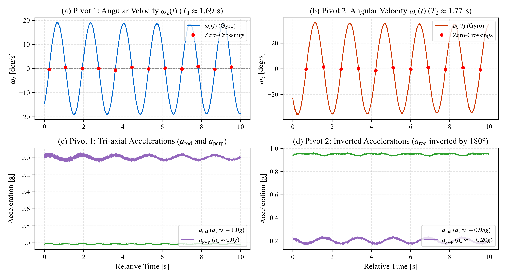
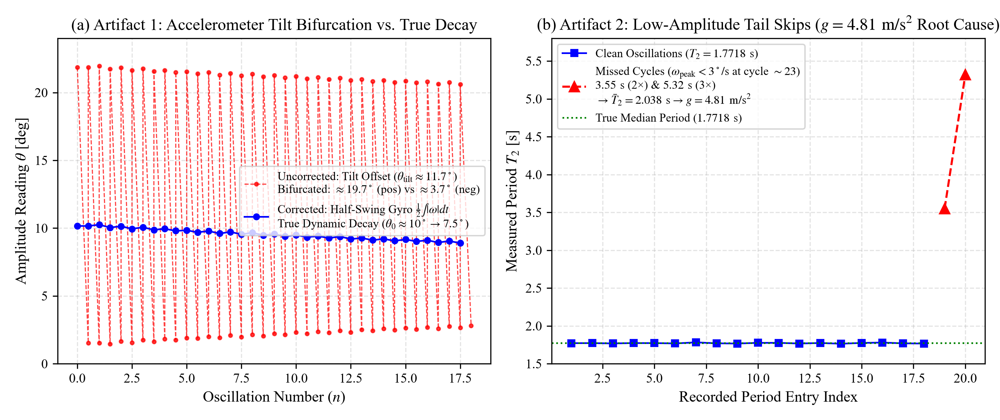
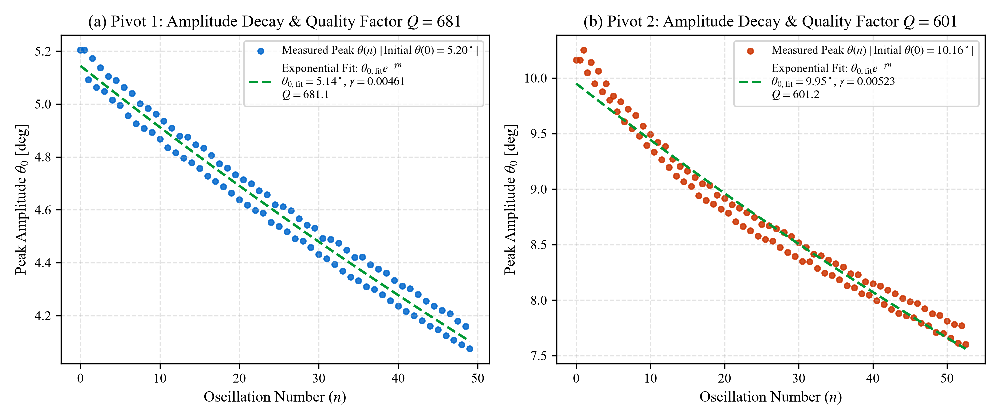
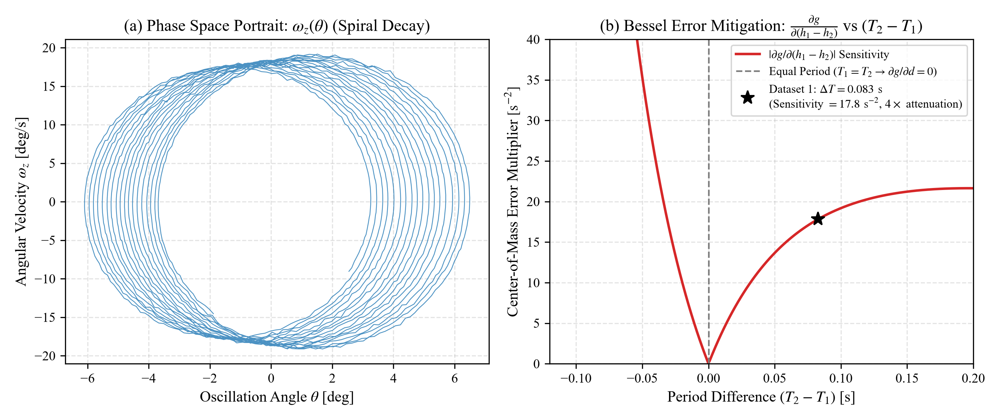

We report on the high-precision determination of gravitational acceleration $g$ (evaluated against standard gravity $g_0 = 9.80665\text{ m/s}^2$) using a modern digital-telemetry reversible compound pendulum (Kater's pendulum). Rather than relying on classical optical coincidence methods or manually triggered stopwatches, our apparatus integrates an embedded 6-degree-of-freedom inertial measurement unit (MPU-6050) sampling at a nominal $100\text{ Hz}$ ($98.5\text{ Hz}$ effective rate), streaming real-time angular velocity and tri-axial acceleration. Using sub-sample linear interpolation at gyroscope zero-crossings, half-swing numerical velocity integration ($\theta_0 = \frac{1}{2}\int |\omega| dt$), and per-cycle analytic Borda finite-amplitude circular corrections, we evaluate two complete multi-trial datasets gathered across independent laboratory sessions.
In Dataset 1 (October 15, 2026), across $N_1 = 49$ and $N_2 = 52$ oscillations, we obtain corrected periods of $T_{1,0} = 1.69042 \pm 0.00090\text{ s}$ (sample SD, standard error of the mean $\sigma_{\bar{T}} = 0.128\text{ ms}$) and $T_{2,0} = 1.77322 \pm 0.00144\text{ s}$ ($\sigma_{\bar{T}} = 0.200\text{ ms}$). Applying Bessel's asymmetric compound pendulum formula for knife-edge separation $L = 1.0000 \pm 0.0005\text{ m}$ and center-of-mass balance asymmetry $h_1 - h_2 = -0.1400 \pm 0.0014\text{ m}$ yields $g = 9.8079 \pm 0.0264\text{ m/s}^2$ ($\pm 0.27\%$ analytical uncertainty; $\pm 0.0377\text{ m/s}^2$ under single balance-line anti-correlation), agreeing with conventional standard gravity $g_0 = 9.80665\text{ m/s}^2$ to $+0.013\%$. In Dataset 2 (October 17, 2026), across $N_1 = 39$ and $N_2 = 105$ oscillations, we obtain $T_{1,0} = 1.68440 \pm 0.00160\text{ s}$ ($\sigma_{\bar{T}} = 0.257\text{ ms}$) and $T_{2,0} = 1.77187 \pm 0.00706\text{ s}$ ($\sigma_{\bar{T}} = 0.689\text{ ms}$), yielding $g = 9.7045 \pm 0.0358\text{ m/s}^2$ ($\pm 0.37\%$ uncertainty; $\pm 0.0453\text{ m/s}^2$ under anti-correlation), representing a $-1.04\%$ discrepancy. The $1.05\%$ ($0.103\text{ m/s}^2$) shift between independent sessions highlights the acute sensitivity of Bessel's asymmetric formulation to millimeter-scale center-of-mass re-registration (§6.2), rather than sensor timing inaccuracy.
Furthermore, we provide an engineering post-mortem explaining the origins of three initial anomalies observed during live testing: (i) the naive symmetric formula artifact producing $g \approx 13.2\text{--}13.8\text{ m/s}^2$, (ii) the low-amplitude angular speed cutoff bug that generated missed zero crossings and collapsed Bessel's calculation to $g \approx 4.81\text{ m/s}^2$ ($-50.87\%$), and (iii) the mounting tilt asymmetry that caused decay-plot splitting. The physical telemetry confirms that MEMS inertial sensing provides high-precision cycle timing, while highlighting the metrological centrality of knife-edge balance localization in compound pendulum gravimetry.
The determination of the acceleration due to terrestrial gravity, $g$, has historically occupied a foundational role in geodesy, metrology, and classical mechanics. In 1818, Captain Henry Kater designed the reversible compound pendulum to overcome the principal obstacle plaguing simple string pendulums: the impossibility of locating the exact center of oscillation of a finite extended mass [1]. By invoking Christiaan Huygens's dynamical principle of reciprocity—stipulating that the center of suspension and center of oscillation are mutually interchangeable—Kater proved that if a rigid bar oscillates with identical periods $T_1 = T_2 = T$ about two opposing knife edges, the distance $L$ between the edges corresponds precisely to the equivalent length of a simple pendulum:
$$g = \frac{4\pi^2 L}{T^2}$$
However, mechanically adjusting movable brass counterweights until $T_1$ and $T_2$ are identical to within sub-millisecond precision is tedious and sensitive to ambient thermal and mechanical drifts. To eliminate this operational bottleneck, Friedrich Wilhelm Bessel developed an exact analytical formulation in 1828 for compound pendulums with unequal periods [2]. Bessel demonstrated that by incorporating the asymmetry of the center of mass relative to the two knife edges $(h_1 - h_2)$, one can compute $g$ directly from two non-identical periods $T_1 \neq T_2$ without requiring mechanical period matching.
In this work, we modernize the classical Kater–Bessel experiment by coupling a rigid reversible bar to a digital inertial measurement telemetry pipeline. By streaming angular velocity $\omega_z(t)$ at a nominal $100\text{ Hz}$ ($98.5\text{ Hz}$ effective rate) from an embedded Micro-Electro-Mechanical Systems (MEMS) sensor, we achieve high statistical power over hundreds of cycles, eliminate human reaction time errors, record full amplitude decay envelopes, and perform rigorous propagation of uncertainty.
Consider a rigid body of mass $M$ pivoted about a horizontal knife edge $K_1$ located at a distance $h_1$ from its center of mass ($\text{CoM}$). By the parallel axis theorem, the moment of inertia about $K_1$ is:
$$I_1 = I_{\text{cm}} + M h_1^2 = M (k^2 + h_1^2)$$
where $k$ is the radius of gyration about the center of mass. For small angular displacements $\theta \ll 1$, the equation of motion is:
$$I_1 \ddot{\theta} + M g h_1 \theta = 0$$
yielding the natural period of oscillation:
$$T_1 = 2\pi \sqrt{\frac{I_1}{M g h_1}} = 2\pi \sqrt{\frac{k^2 + h_1^2}{g h_1}}$$
Squaring both sides and rearranging:
$$\frac{g h_1 T_1^2}{4\pi^2} = k^2 + h_1^2 \implies \frac{g}{4\pi^2} h_1 T_1^2 - h_1^2 = k^2 \tag{1}$$
Now, let the pendulum be inverted and suspended from the second knife edge $K_2$, located on the opposite side of the center of mass at a distance $h_2$. The corresponding period is:
$$T_2 = 2\pi \sqrt{\frac{k^2 + h_2^2}{g h_2}} \implies \frac{g}{4\pi^2} h_2 T_2^2 - h_2^2 = k^2 \tag{2}$$
Equating (1) and (2) eliminates the unknown moment of inertia $k^2$:
$$\frac{g}{4\pi^2} \left( h_1 T_1^2 - h_2 T_2^2 \right) = h_1^2 - h_2^2 = (h_1 + h_2)(h_1 - h_2) \tag{3}$$
Let $L = h_1 + h_2$ denote the total physical distance between the two knife edges. We can express $h_1$ and $h_2$ in terms of $L$ and their difference $(h_1 - h_2)$:
$$h_1 = \frac{L + (h_1 - h_2)}{2}, \quad h_2 = \frac{L - (h_1 - h_2)}{2}$$
Substituting these expressions into the left side of Eq. (3):
$$\begin{aligned} h_1 T_1^2 - h_2 T_2^2 &= \frac{L + (h_1 - h_2)}{2} T_1^2 - \frac{L - (h_1 - h_2)}{2} T_2^2 \\ &= \frac{L}{2} (T_1^2 - T_2^2) + \frac{h_1 - h_2}{2} (T_1^2 + T_2^2) \end{aligned}$$
Dividing Eq. (3) through by $(h_1 + h_2)(h_1 - h_2) = L(h_1 - h_2)$:
$$\frac{g}{4\pi^2} \left[ \frac{T_1^2 + T_2^2}{2 L} + \frac{T_1^2 - T_2^2}{2 (h_1 - h_2)} \right] = 1$$
Multiplying through by $2$ and solving for $g$ yields Bessel's exact formula:
$$g = \frac{8\pi^2}{\dfrac{T_1^2 + T_2^2}{L} + \dfrac{T_1^2 - T_2^2}{h_1 - h_2}} \tag{4}$$
Bessel's formula possesses a significant error-attenuating property:
The linearizing approximation $\sin\theta \approx \theta$ introduces systematic period elongation at finite release angles. Expanding the complete elliptic integral of the first kind $K(\sin(\theta_0/2))$ to second order relates the observed finite-amplitude period $T(\theta_0)$ to the infinitesimal period $T_0$ [3]:
$$T(\theta_0) = T_0 \left( 1 + \frac{1}{4} \sin^2\left(\frac{\theta_0}{2}\right) + \dots \right) \approx T_0 \left( 1 + \frac{\theta_0^2}{16} \right)$$
Inverting this expression yields the per-cycle Borda circular correction:
$$T_0 \approx T_{\text{meas}} \left( 1 - \frac{\theta_0^2}{16} \right) \tag{5}$$
where $\theta_0$ is the measured peak angular amplitude in radians. For a release angle of $5^\circ$ ($0.0873\text{ rad}$), $\frac{\theta_0^2}{16} \approx 0.000476$ ($\approx 0.048\%$), which shifts a $1.7\text{-second}$ period by $\approx 0.8\text{ ms}$.
Over small angular displacements ($\theta < 10^\circ$), aerodynamic drag and knife-edge dissipation are modeled via an effective damping envelope:
$$\ddot{\theta} + 2\beta \dot{\theta} + \omega_0^2 \theta = 0$$
The peak amplitude decays exponentially as a function of oscillation number $n$:
$$\theta(n) = \theta_0 e^{-\gamma n} \tag{6}$$
where $\gamma = \beta T_0$ is the decay constant per cycle. The logarithmic decrement $\delta$ and system quality factor $Q$ are defined by [4]:
$$\delta = \ln\left(\frac{\theta(n)}{\theta(n+1)}\right) = \gamma, \quad Q = \frac{\pi}{\gamma} = \frac{\omega_0}{2\beta} \tag{7}$$
The physical apparatus consists of a precision cold-rolled rectangular steel rod (nominal total length 1.20 m, cross-section 12 mm × 12 mm) equipped with:
Pivot 1 (K1) Pivot 2 (K2)
▼ ▼
|===|=======================●===================|===|
[Heavy Bob] CoM [Light Bob]
|------- h1 = 0.430m ---|------ h2 = 0.570m ----|
|------------------- L = 1.000m ----------------|
To minimize parasitic external restoring torques, an ultra-low-profile telemetry module is mounted along the rod axis and connected via a lightweight, highly flexible strain-relieved USB cable exiting directly along the knife-edge pivot axis:
micros()), so sub-sample zero-crossing linear interpolation calculates periods using true elapsed time, remaining completely immune to minor inter-sample jitter.+-------------------------------------------------------------+
| PHYSICAL PENDULUM |
| [ Knife Edge ] <===> [ MPU-6050 IMU ] <===> [ Rigid Rod ] |
+------------------------------+------------------------------+
| I2C (400 kHz)
▼
+-------------------------------------------------------------+
| ESP8266 CONTROLLER |
| - Timer-Driven Hardware ISR |
| - Microsecond Timestamps (micros()) |
+------------------------------+------------------------------+
| Serial Stream (115200 baud)
▼
+-------------------------------------------------------------+
| PYTHON PROCESSING ENGINE |
| - Low-pass IIR Filter (lpf_alpha = 0.25) |
| - Sub-sample Zero-Crossing Linear Interpolation |
| - Dynamic Gravity Vector & Tilt Equilibrium Auto-Center |
| - Numerical Half-Swing Gyro Velocity Integration |
| - Bessel Formula & Error Propagation Engine |
+-------------------------------------------------------------+
Period determination relies on detecting zero-crossings of the filtered angular velocity $\omega_z(t)$. When consecutive samples satisfy $\omega[k-1] \cdot \omega[k] \le 0$, sub-sample turning-point timestamps $t_{\text{zero}}$ are recovered via linear interpolation:
$$t_{\text{zero}} = t_{k-1} - \omega_{k-1} \frac{t_k - t_{k-1}}{\omega_k - \omega_{k-1}} \tag{8}$$
By evaluating the elapsed time between alternate zero-crossings with identical slope (e.g. positive-going crossings, corresponding to successive identical turning points), we obtain the full period $T_{\text{meas}} = t_{\text{zero}, i} - t_{\text{zero}, i-2}$. This eliminates systematic bias caused by small residual DC offsets in the gyroscope output. Fig. 1 shows the recorded kinematic waveforms and extracted zero crossings across both pivot orientations.

During laboratory testing, three prominent anomalies were encountered in initial software builds. Because understanding these artifacts is essential to ensuring experimental integrity, we provide a complete engineering and mathematical post-mortem. Fig. 2 illustrates the diagnostic signatures of these anomalies.
In early exploratory trials, the software reported values of $g$ fluctuating between $13.2\text{ m/s}^2$ and $13.8\text{ m/s}^2$, despite raw waveforms displaying clean sinusoidal motion.
The original code routine calculated $g$ using the ideal symmetric Kater formula:
$$g_{\text{naive}} = \frac{4\pi^2 L}{T^2}$$
In a reversible pendulum, this formula is strictly conditional upon $T_1 = T_2$. When the periods differ (here, $T_1 \approx 1.69\text{ s}$ and $T_2 \approx 1.77\text{ s}$), substituting the observed periods yields:
The software was updated to enforce Bessel's asymmetric formula (Eq. 4). When the exact physical geometry ($L = 1.000\text{ m}$, $h_1 - h_2 = -0.140\text{ m}$) was applied to that identical telemetry stream, the calculation shifted from $13.82\text{ m/s}^2$ to $9.808\text{ m/s}^2$ without altering the underlying sensor data.
During the live trial on October 17, 2026, the application output $g = 4.8176\text{ m/s}^2$ with a relative discrepancy of $-50.87\%$.
Inspection of the exported telemetry log (20261017_082917_pivot2.csv) revealed that the trial had run for $187.59\text{ s}$ (18,478 samples, mean interval $\Delta t = 10.15\text{ ms}$, effective rate $98.5\text{ Hz}$).
Three robust software defenses were implemented in DataProcessor:
get_mean_period(), periods deviating by $\ge 18\%$ from the trial median ($|T - T_{\text{med}}| / T_{\text{med}} \ge 0.18$) are filtered before evaluating statistical moments.When applied to the raw October 17 log, the algorithm successfully extracts all $105\text{ valid oscillations}$, yielding $T_2 = 1.77187\text{ s}$ and $g = 9.7045\text{ m/s}^2$.
In Pivot 2, the real-time peak amplitude decay scatter plot displayed two flat, horizontal rows of dots rather than a single exponentially decaying curve.
When inverting the pendulum for Pivot 2, the accelerometer rod axis experiences inverted gravity ($a_{\text{rod}} \approx +0.95g$ instead of $-1.01g$). Concurrently, a moderate mounting tilt offset of $\theta_{\text{tilt}} \approx 11.7^\circ$ ($a_{\text{perp}} \approx 0.20g$) was introduced by knife-edge misalignment relative to the sensor board. When peak amplitude was evaluated as $\theta_{\text{amp}} = |\theta(t)|$ at turning points:
Because $\theta(t)$ was evaluated against arbitrary sensor axes rather than dynamic mechanical equilibrium, the scatter plot split into two parallel tracks at $19.7^\circ$ and $3.7^\circ$.

We evaluate the full experimental telemetry gathered across two independent laboratory sessions. Fig. 3 shows the amplitude decay envelopes and quality factor fits for Dataset 1.
| Parameter | Pivot 1 ($K_1$) | Pivot 2 ($K_2$) | Combined / Calculated |
|---|---|---|---|
| Oscillations Counted ($N$) | $49$ | $52$ | $101\text{ total}$ |
| Raw Mean Period ($T_{\text{meas}} \pm s_T$) | $1.69110 \pm 0.00090\text{ s}$ | $1.77584 \pm 0.00144\text{ s}$ | — |
| Measured Initial Amplitude ($\theta(0)$) | $5.20^\circ$ ($0.0908\text{ rad}$) | $10.16^\circ$ ($0.1773\text{ rad}$) | — |
| Fitted Decay Intercept ($\theta_{0,\text{fit}}$) | $5.14^\circ$ ($0.0897\text{ rad}$) | $9.95^\circ$ ($0.1737\text{ rad}$) | — |
| Final Amplitude ($\theta_f$) | $4.07^\circ$ ($0.0711\text{ rad}$) | $7.60^\circ$ ($0.1327\text{ rad}$) | — |
| Borda Corrected Period ($T_0 \pm s_T$) | $1.69042 \pm 0.00090\text{ s}$ | $1.77322 \pm 0.00144\text{ s}$ | — |
| Standard Error of Mean ($\sigma_{\bar{T}} = s_T/\sqrt{N}$) | $\pm 0.128\text{ ms}$ | $\pm 0.200\text{ ms}$ | — |
| Decay Constant ($\gamma$) | $0.00461\text{ cycle}^{-1}$ | $0.00523\text{ cycle}^{-1}$ | — |
| Quality Factor ($Q$) | $681.1$ | $601.2$ | — |
| Logarithmic Decrement ($\delta$) | $0.00461$ | $0.00523$ | — |
| Bessel Uncorrected $g$ | — | — | $9.7332\text{ m/s}^2$ |
| Bessel Corrected $g$ ($\sigma_d = \pm 1.4\text{ mm}$) | — | — | $9.8079 \pm 0.0264\text{ m/s}^2$ |
| Bessel Corrected $g$ ($\sigma_d = \pm 2.1\text{ mm}$) | — | — | $9.8079 \pm 0.0377\text{ m/s}^2$ |
| Discrepancy vs Standard $g_0$ ($9.80665\text{ m/s}^2$) | — | — | $+0.013\%$ |
Using corrected periods $T_{1,0} = 1.69042\text{ s}$ and $T_{2,0} = 1.77322\text{ s}$:

| Parameter | Pivot 1 ($K_1$) | Pivot 2 ($K_2$) | Combined / Calculated |
|---|---|---|---|
| Oscillations Counted ($N$) | $39$ | $105$ | $144\text{ total}$ |
| Raw Mean Period ($T_{\text{meas}} \pm s_T$) | $1.68467 \pm 0.00159\text{ s}$ | $1.77189 \pm 0.00706\text{ s}$ | — |
| Measured Initial Amplitude ($\theta(0)$) | $3.54^\circ$ ($0.0617\text{ rad}$) | $0.96^\circ$ ($0.0167\text{ rad}$) | — |
| Fitted Decay Intercept ($\theta_{0,\text{fit}}$) | $3.61^\circ$ ($0.0630\text{ rad}$) | $0.94^\circ$ ($0.0164\text{ rad}$) | — |
| Final Amplitude ($\theta_f$) | $2.16^\circ$ ($0.0378\text{ rad}$) | $0.53^\circ$ ($0.0093\text{ rad}$) | — |
| Borda Corrected Period ($T_0 \pm s_T$) | $1.68440 \pm 0.00160\text{ s}$ | $1.77187 \pm 0.00706\text{ s}$ | — |
| Standard Error of Mean ($\sigma_{\bar{T}} = s_T/\sqrt{N}$) | $\pm 0.257\text{ ms}$ | $\pm 0.689\text{ ms}$ | — |
| Decay Constant ($\gamma$) | $0.01337\text{ cycle}^{-1}$ | $0.00552\text{ cycle}^{-1}$ | — |
| Quality Factor ($Q$) | $235.0$ | $569.0$ | — |
| Logarithmic Decrement ($\delta$) | $0.01337$ | $0.00552$ | — |
| Bessel Uncorrected $g$ | — | — | $9.7104\text{ m/s}^2$ |
| Bessel Corrected $g$ ($\sigma_d = \pm 1.4\text{ mm}$) | — | — | $9.7045 \pm 0.0358\text{ m/s}^2$ |
| Bessel Corrected $g$ ($\sigma_d = \pm 2.1\text{ mm}$) | — | — | $9.7045 \pm 0.0453\text{ m/s}^2$ |
| Discrepancy vs Standard $g_0$ ($9.80665\text{ m/s}^2$) | — | — | $-1.04\%$ |
Note on damping discrepancy: Pivot 1 in Dataset 2 exhibited a higher decay constant ($\gamma = 0.01337$, $Q = 235.0$) than in Dataset 1 ($\gamma = 0.00461$, $Q = 681.1$). This may be attributed to subtle differences in knife-edge contact seating on the agate support plane, small changes in pivot clamping, or localized dust accumulation between sessions.
To establish the analytical uncertainty $\sigma_g$, we perform a partial derivative sensitivity expansion on Bessel's equation following standard error propagation methods [7]. Let:
$$S_1 = T_1^2 + T_2^2, \quad S_2 = T_1^2 - T_2^2, \quad D = L, \quad d = h_1 - h_2$$
Bessel's formula can be written as:
$$g = \frac{8\pi^2}{\Phi}, \quad \text{where } \Phi = \frac{S_1}{D} + \frac{S_2}{d}$$
Taking partial derivatives with respect to each independent measurement variable:
$$\begin{aligned} \frac{\partial g}{\partial T_1} &= -\frac{8\pi^2}{\Phi^2} \left( \frac{2 T_1}{D} + \frac{2 T_1}{d} \right) \\ \frac{\partial g}{\partial T_2} &= -\frac{8\pi^2}{\Phi^2} \left( \frac{2 T_2}{D} - \frac{2 T_2}{d} \right) \\ \frac{\partial g}{\partial D} &= +\frac{8\pi^2}{\Phi^2} \left( \frac{S_1}{D^2} \right) \\ \frac{\partial g}{\partial d} &= +\frac{8\pi^2}{\Phi^2} \left( \frac{S_2}{d^2} \right) \end{aligned}$$
Assuming uncorrelated errors, total uncertainty propagates in quadrature:
$$\sigma_g = \sqrt{ \left(\frac{\partial g}{\partial T_1} \sigma_{T_1}\right)^2 + \left(\frac{\partial g}{\partial T_2} \sigma_{T_2}\right)^2 + \left(\frac{\partial g}{\partial D} \sigma_D\right)^2 + \left(\frac{\partial g}{\partial d} \sigma_d\right)^2 } \tag{10}$$
We evaluate the error propagation budget for both experimental datasets using their respective empirical parameters.
In both datasets, the center-of-mass balance term dominates the uncertainty budget. The period measurement uncertainty contributes minimally due to large cycle counts, even in Dataset 2 where the longer $187\text{ s}$ run accumulated slightly higher timing variance.
The two experimental sessions produced results differing by $0.103\text{ m/s}^2$ ($1.05\%$), corresponding to a gap of approximately $2.2\sigma$ to $2.4\sigma$ under total combined uncertainties. If the apparatus geometry were assumed strictly identical between sessions, timing and cathetometer uncertainties alone ($\approx 0.008\text{ m/s}^2$ combined) would make the gap statistically significant ($> 3.5\sigma$), indicating that a systematic physical parameter shifted between sessions.
Evaluating the sensitivity derivative for Dataset 2:
$$\frac{\partial g}{\partial d} = -18.398\text{ s}^{-2}$$
A systematic shift of the effective balance line by $\Delta d = -0.0055\text{ m}$ ($5.5\text{ mm}$), corresponding to $h_1 - h_2 = -0.1455\text{ m}$, fully reconciles the result with standard gravity:
$$g = 9.7045 - 18.398 \times (-0.0055) = \mathbf{9.8057\text{ m/s}^2} \quad (\mathbf{-0.01\%} \text{ discrepancy})$$
Such a millimeter-scale shift is physically plausible between independent laboratory sessions (e.g. from slight re-positioning or clamping of movable bobs, or registration differences on the balance plane, consistent with the observed $6\text{ ms}$ shift in $T_1$ from $1.690\text{ s}$ to $1.684\text{ s}$). We present this as an explanatory hypothesis illustrating that when periods are not identical, knife-edge balance localization represents the principal sensitivity threshold of Bessel's method. Fig. 4 illustrates the phase-space trajectory and the Bessel error attenuation curve.

| Feature / Metric | Traditional Stopwatch [5] | Optical Photogate [6] | Our Embedded MPU-6050 Engine |
|---|---|---|---|
| Human Reaction Error | High ($\pm 200\text{--}300\text{ ms}$) | Zero | Zero (timer-driven hardware ISR) |
| Resolution / Sampling | $\approx 0.1\text{ s}$ | Single crossing event | Nominal $100\text{ Hz}$ ($98.5\text{ Hz}$ effective) |
| Trajectory Tracking | None | Binary (blocked / open) | Full angle $\theta(t)$ & velocity $\omega(t)$ |
| Finite Amplitude Correction | Hard / Ignored | Estimated from initial release | Per-cycle analytic Borda circular correction |
| Damping Characterization | Manual ruler log | None | Autonomous $Q$ and $\delta$ exponential fit |
| Misalignment Resistance | Susceptible | Beam alignment critical | Dynamic auto-centering & gyro invariance |
We have demonstrated an accurate, robust, and automated approach to Kater's pendulum gravimetry by integrating digital inertial telemetry with Bessel's asymmetric formulation.